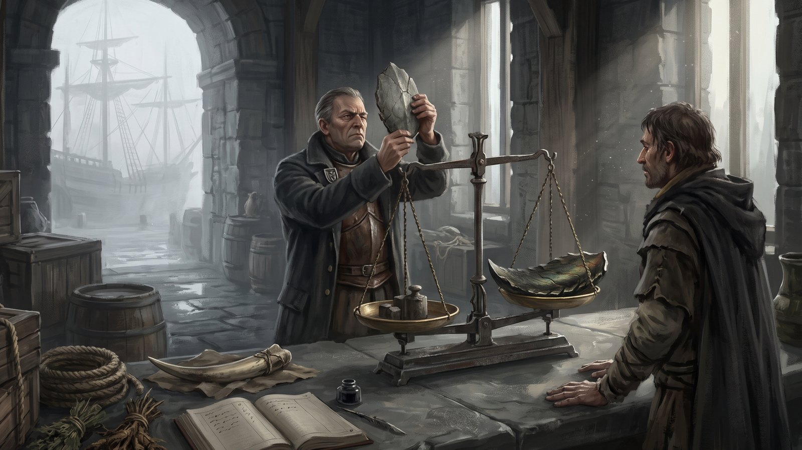

Comércio em Belford
Registros da Guilda da Luz Âmbar, Porto de Irus.
Apesar da constante ameaça dos dragões, Belford atrai comerciantes audaciosos, exploradores e caravanas dispostas a arriscar tudo por riquezas únicas. Esses indivíduos vêm de outros continentes, navegando pelos mares perigosos ou enfrentando rotas aéreas arriscadas em dirigíveis protegidos por magos e mercenários.
Principais Produtos de Interesse
- Escamas e ossos de dragões — Extremamente valiosos. Utilizados para forjar armaduras raras, armas encantadas, joias e relíquias mágicas.
- Couro de asas de dragão — Leve, resistente, utilizado para capas e armaduras especiais.
- Cristais de energia — Fragmentos mágicos encontrados em cavernas profundas após ataques de dragões. Carregam propriedades energéticas raríssimas.
- Ervas medicinais de calor dracônico — Crescem apenas onde o solo guarda o calor de um ninho. As melhores vinham das encostas do Monte Othram — e não vêm mais. O que resta dessas ervas em frascos lacrados vale mais que o peso em escama: é a última colheita de uma montanha que não existe.
- Artefatos de guerra de Kheltan — Espadas, lanças e escudos criados por mestres ferreiros. Cada lâmina carrega a assinatura de seu criador, e é a assinatura que define o preço.
- Troféus de Lotun — Presas, garras e até crânios de dragões empalhados, vendidos como relíquias em leilões secretos.
O Peso da Escama

Belford não cunha moeda. Cada reino tentou, nos primeiros anos, e cada tentativa morreu pelo mesmo motivo: metal se funde, selo se falsifica, e um brasão só vale o que vale o braço que o defende. O continente acabou se entendendo por aquilo que ninguém consegue fabricar — a escama.
Uma escama inteira de dragão adulto, sem rachadura e com a cor viva, é a unidade de referência. Chamam-na apenas de peso. Um peso compra o soldo de um ano de soldado raso em Irus. Dez pesos compram uma lâmina assinada por mestre ferreiro de Kheltan. Ninguém jamais viu cem pesos juntos em um mesmo salão, e os que dizem ter visto costumam estar bêbados ou mentindo.
A moeda de Belford não se cunha.
Arranca-se.
O efeito é simples e brutal: a economia do continente está amarrada à ameaça que tenta destruí-lo. Enquanto houver dragões, haverá riqueza. No ano em que os dragões sumirem, Belford descobrirá que é pobre.
Perfis Comerciais
Mercadores Estrangeiros
Vindos de continentes vizinhos, profissionais independentes ou vinculados a guildas estrangeiras, buscam escamas raras, espólios de guerra, sangue de dragão e artefatos únicos forjados por guerreiros de Kheltan e Lotun. Operam sob tratados temporários de comércio — decretos selados com brasões dos reinos — e estão sujeitos a tributos e inspeções.
Exploradores Comerciais
Aventureiros que atuam como captadores de recursos. Costumam montar pequenas bases nos arredores de Belford para caçar ou adquirir itens raros e depois revendem para grandes casas comerciais.
Caravanas Comerciais
Movem-se entre Irus, Kheltan e Lotun transportando produtos e trocando informações. Suas caravanas são fortemente protegidas e suas rotas mudam frequentemente para evitar emboscadas de bandidos ou ataques de dragões.
São três reinos, não quatro. Nenhuma caravana entra em Nheris, e não é por falta de tentativa. A mercadoria que move Belford — escama, osso, presa, couro de asa — é, para os xamãs, pedaço de porta arrombada. Vender isso ali não é negócio: é ofensa. As poucas caravanas que insistiram relatam a mesma coisa, e nunca a mesma trilha duas vezes: a floresta se fecha, o caminho da véspera não está mais lá, e ao terceiro dia os animais se recusam a seguir.
O que sai de Nheris sai por vontade de Nheris. Uma vez por estação, sem data avisada, encontram-se na orla da mata fardos de ervas, resinas e raízes que nenhum herbalista de Belford sabe nomear — e que curam o que os médicos de Irus dão por perdido. Ao lado, nunca mais que isso: sal, ferro bruto, linho. Quem leva demais não encontra fardo na estação seguinte.
Rotas de Exportação
Porto de Irus — "A Boca do Mundo"
- Principal saída de mercadorias para Gantro, Endorath e Eldros.
- Os navios são reforçados com aço das forjas de Kheltan e acompanhados por magos de Eldros.
- Qualquer carregamento precisa passar pela inspeção dos Olhos de Irus, uma ordem oficial que controla o que entra e sai.
Rota Aérea — Dirigíveis do Vento Silencioso
- Uma guilda nômade chamada "Olho do Vento" opera dirigíveis que cruzam as nuvens mais altas, longe dos olhos dos dragões.
- Utilizados principalmente para produtos raros, nobres viajantes e artefatos secretos.
- Extremamente caros — mas rápidos e discretos.
Um dos membros mais antigos da guilda, conhecido apenas como "O Navegador do Azul", afirma ter visto uma vez, ao ultrapassar a última camada de nuvens, "algo imenso, maior que montanhas", que cobriu o sol e voou lentamente acima do próprio céu. Muitos o chamaram de louco.
Pararam de chamar depois da Grande Guerra. Quando se soube o que havia caído sobre o Monte Othram, metade das casas comerciais de Belford mandou procurar o velho — alguém que tivesse visto Vhar'Zhul antes de todo mundo valia qualquer preço. Não o encontraram. A guilda não confirma nem desmente que ele exista; diz apenas que a rota dele foi aposentada, e que ninguém a reabre.
Antes e Depois da Queda
Os livros da Luz Âmbar dividem a contabilidade de Belford em dois volumes, e entre um e outro há cem anos de página em branco — o Século Perdido, em que ninguém escriturou nada porque não havia a quem prestar contas.
- A rota de Othram morreu com a montanha. Era a espinha do comércio interior, ligando as encostas às forjas de Kheltan. Hoje a cratera é terra de ninguém, e as caravanas dão uma volta de doze dias.
- A escama encareceu, depois despencou. No primeiro ano após a Queda ninguém caçava, e o peso triplicou. Então os caçadores de Lotun voltaram aos campos e encontraram o cemitério dracônico — mais escama morta do que o continente inteiro havia extraído em gerações. O preço afundou. Muitas casas comerciais afundaram junto.
- Escama de carniça não vale peso. A Luz Âmbar e a Irmandade do Dente Branco, que nunca concordaram em nada, concordaram nisso: escama arrancada de corpo que já estava morto não serve de moeda. Só vale o peso a escama tomada de um dragão vivo. A regra sustentou o padrão — e manteve os caçadores saindo a campo.
- Os Olhos de Irus dobraram de tamanho. Depois de um século sem inspeção, o que entrou e saiu do continente nesse intervalo é a maior lacuna dos registros, e a ordem existe hoje tanto para controlar o presente quanto para reconstruir o que se perdeu.
Guildas Comerciais Conhecidas
- A Casa Dervayn (Gantro) — Especialistas em magia e escamas cristalizadas. Vendem para reis e imperadores.
- Os Anéis de Orinn (Endorath) — Têm monopólio sobre espadas feitas em Kheltan. Pagam caro por cada remessa.
- A Irmandade do Dente Branco (Lotun) — Mestres caçadores, vendem presas e garras de dragões a colecionadores e feiticeiros.
- A Guilda da Luz Âmbar (Irus) — Controla 90% da exportação legal de Belford. Seus navios levam brasões de prestígio.
Kheltan não tem guilda, e isso não é descuido. Os ferreiros recusaram todas as propostas de representação: entendem que quem vende em nome de outro acaba forjando em nome de outro. Em Kheltan, cada mestre negocia a própria obra, de pé, na própria forja — e manda embora quem não entender a assinatura na lâmina. É também por isso que as casas estrangeiras pagam o que pagam por uma remessa: não existe atacado.